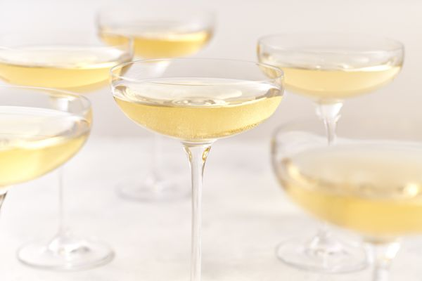

Soupe de Champagne (cocktail)

Ingrédients (pour 6 personnes):
- 8cl de cointreau
- 16cl de sucre de canne
- 2 citrons verts pressés (ou une louche de Pulco vert)
- 1 glaçons
- 75cl de champagne
Étape 1
Verser dans un récipient le Cointreau, le sucre de canne et le jus de citron. Faire macérer pendant une nuit.
Étape 2
Ajouter le Champagne au moment de servir avec les glaçons.